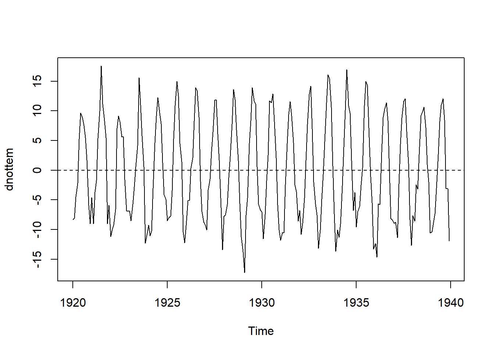
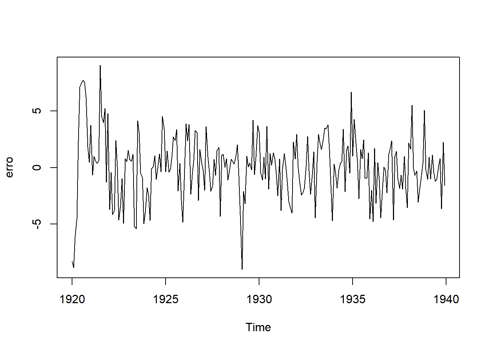
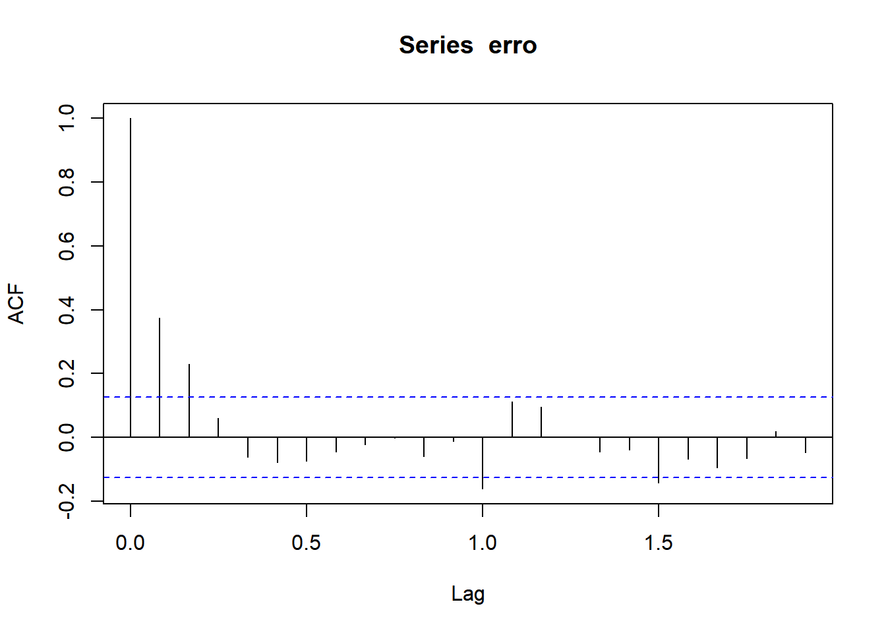
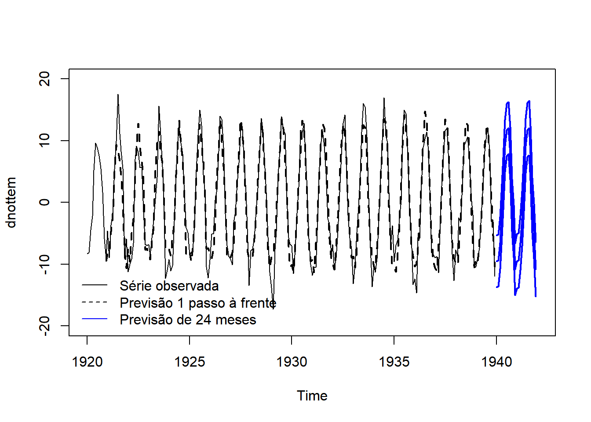
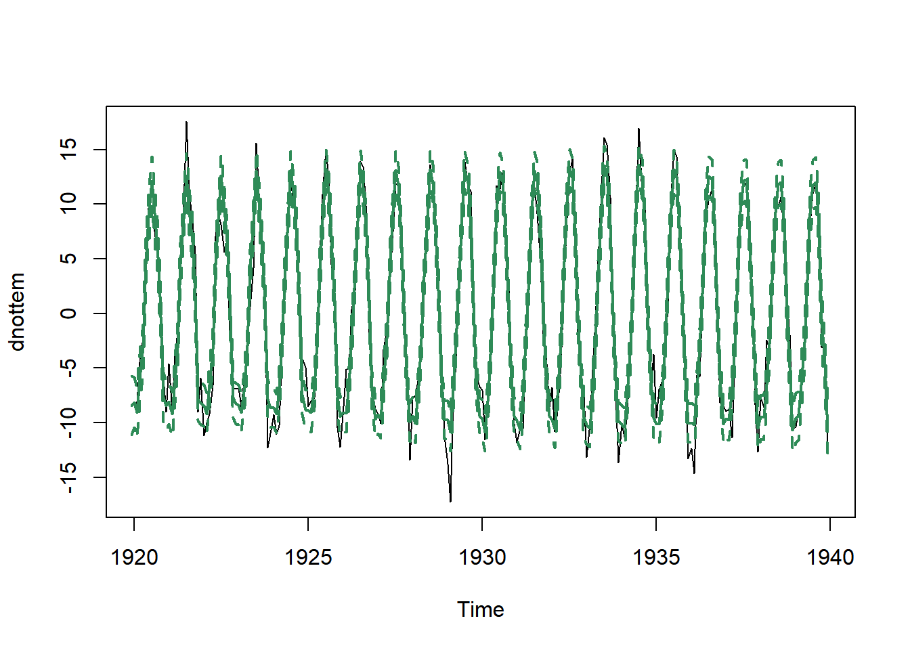

Carregando pacotes exigidos: dlmWarning: package 'dlm' was built under R version 4.3.1Carregando pacotes exigidos: dlmWarning: package 'dlm' was built under R version 4.3.1Como ilustração, considere um efeito sazonal trimestral (período 4). Considere os seguintes fatores sazonais:
\[\beta_t=\left\{\begin{array}{ll}1,& t=1,5,9,\ldots \\ 2,& t=2,6,10,\ldots\\ 3,&t=3,7,11,\ldots \\ 4,&t=4,8,12,\ldots\end{array}\right.\]
Note que \[\beta_1+\beta_2+\beta_3+\beta_4=10\]
Também note que \[\beta_2+\beta_3+\beta_4+\beta_5=10\] e que o mesmo é verdade para a soma de 4 quaiquer fatores sazonais consecutivos. Pode-se provar que, para qualquer sinal sazonal, a soma de seu efeito considerando um intervalo de tempo igual ao período é constante.
Considere então que uma série com período 4, fatores sazonais desconhecidos e e uma uma tendência, do tipo \[\hbox{tendência}(t)=\alpha+\gamma t.\] Então, para qualquer \(k=0,1,2,\ldots,\)
\[y_{k+1}+y_{k+2}+y_{k+3}+y_{k+4}=4\alpha+\gamma(10+4k)+\beta_1+\beta_2+\beta_3+\beta_4\]
Portanto, se os dados forem agregados para construir uma série anual, é impossível estimar \(\alpha\) e \(\beta_1+\beta_2+\beta_3+\beta_4\) em separado. Por isso, assuminos que a soma dos fatores sazonais deve ser nula. Intuitivamente, estamos dizendo que o nível da série não pode ser modelado pela tendência.
Considere uma série sazonal com período \(p\). No modelo linear dinâmico para fatores sazonais, assumimos que existem \(p-1\) fatores sazonais,
\[\psi_1,\ldots,\psi_{p-1},\] sendo que o \(p\)-ésimo fator é, necessariamente \(-(\psi_1-\psi_2-\cdots-\psi_{p-1}\). Além disso, permitimos que cada fator evolua no tempo, o que implica na notação \(\psi_t\). Contudo, neste modelo consideramos apenas uma evolução de nível para os fatores (em um problema mensal, todos os janeiros estariam flutuando em torno de um nível, por exemplo). Por este motivo, a previsão para cada fator dentro dentro de uma determinada posição do ciclo sazonal será constante.
A função dlmModSeas constrói as matrizes \(F_t\) e \(G_t\) para o modelo com fatores sazonais dinâmicos. Vamos ilustrar o uso deste modelo utilizando a série nottem - por didática, vamos remover a tendência da série via loess.
tempo <- 1:length(nottem)
dnottem <- nottem - loess( nottem ~ tempo)$fit
ts.plot(dnottem)
abline(h=0,lty =2)
Já identificamos, em outro momento, que o período desta série é 12, logo
mod <- dlmModSeas(12)Precisamos colocar uma informação sobre os fatores sazonais. Vamos simplesmente assumir que todos valem zero.
mod$m0 <- rep(0,11)Vamos estimar as variâncias:
mod <- modFim(dnottem, mod)Em seguida, aplicamos o filtro de Kalman e verificamos os erros de previsão:
filtro <- dlmFilter(dnottem, mod)
erro <- dnottem - filtro$f
ts.plot(erro)
acf(erro)
Podemos notar que os erros foram altos no começo da série. Em geral, precisamos de pelos menos dois ciclos sazonais para ter uma previsão melhor. Já no correlograma, sobraram alguns elementos para serem explicados, como uma relação da série com as defasagens 1 e 2 e uma sazonalidade autoregressiva. Contudo, o comportamento sazonal, que era nosso objetivo, foi bem explicado.
As previsões vão se repetir após \(12\) unidades de tempo. Abaixo, fazemos a previsão para 2 anos.
previsao24 <- dlmForecast(filtro,24)
previsao24$f Jan Feb Mar Apr May Jun
1940 -9.5206529 -9.3739754 -6.5384935 -2.5977187 3.0850694 9.1938015
1941 -9.5206529 -9.3739754 -6.5384935 -2.5977187 3.0850694 9.1938015
Jul Aug Sep Oct Nov Dec
1940 11.7308485 12.0444188 7.9602846 -0.4841747 -4.6829642 -10.8164433
1941 11.7308485 12.0444188 7.9602846 -0.4841747 -4.6829642 -10.8164433Vamos colocar essas informações em um gráfico.
ts.plot(dnottem,xlim=c(1920,1942), ylim=c(-20,20))
lines( window(filtro$f,start=c(1920,12)), lty=2,lwd = 2)
# medidas para o intervalo de previsão
media_prev <- previsao24$f
media_prev <- ts(media_prev, start = c(1940,1), frequency = 12)
desv_prev <- sqrt( unlist( previsao24$Q))
desv_prev <- ts(desv_prev, start = c(1940,1), frequency = 12)
# intervalo de 90% para as previsões
lines(media_prev, lwd = 2, col ='blue')
lines(media_prev -1.64*desv_prev, lwd = 2, col ='blue')
lines(media_prev+1.64*desv_prev, lwd = 2, col ='blue')
# legenda
legend('bottomleft',c('Série observada','Previsão 1 passo à frente', 'Previsão de 24 meses'), lty=c(1,2,1), col =c(1,1,'blue'), bty = 'n')
Agora vamos estudar os estados suavizados. `
suave <- dlmSmooth(filtro)
sd <- sdSmooth(suave)Como o período é 12, existem \(p-1=11\) estados nesse modelo. Contudo, a matriz \(G_t\) é construída de modo que o primeiro estado sempre contém o fator sazonal da vez. Portanto, para poder analizar os fatores sazonais suavizados, basta selecionar a primeira coluna de s dentro do objeto suave
nivel_medio <- suave$s[,1]
sd_nivel <- sd[,1]
ts.plot(dnottem)
lines(nivel_medio, lwd = 2, col = 'seagreen')
# intervalor de credibilidade (95%) para o nível
lines(nivel_medio - 1.96*sd_nivel, lwd = 2, col = 'seagreen', lty= 2)
lines(nivel_medio + 1.96*sd_nivel, lwd = 2, col = 'seagreen', lty=2)